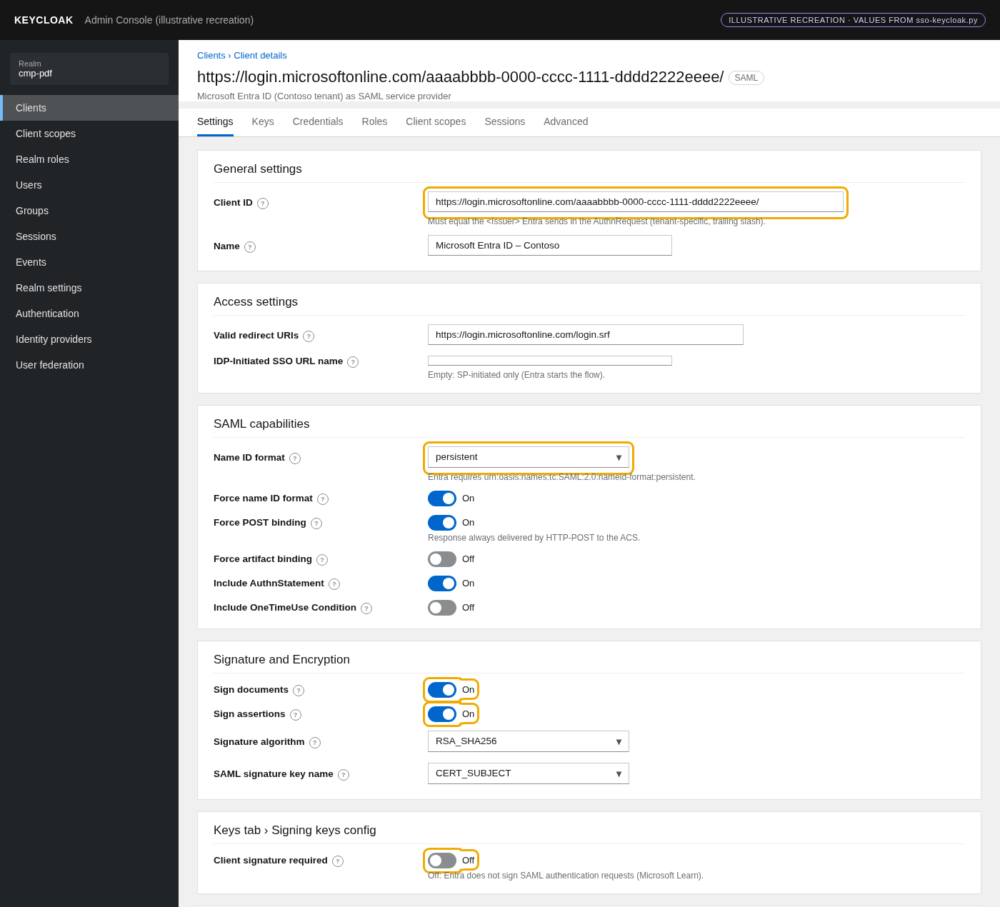
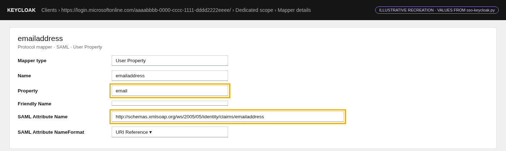
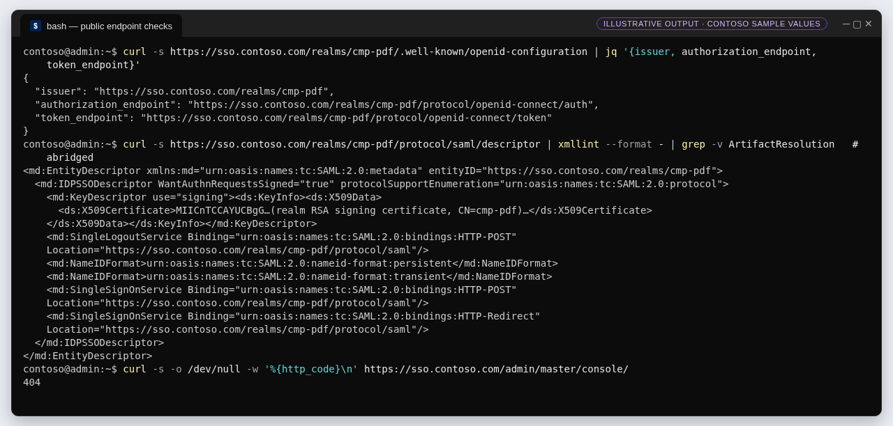
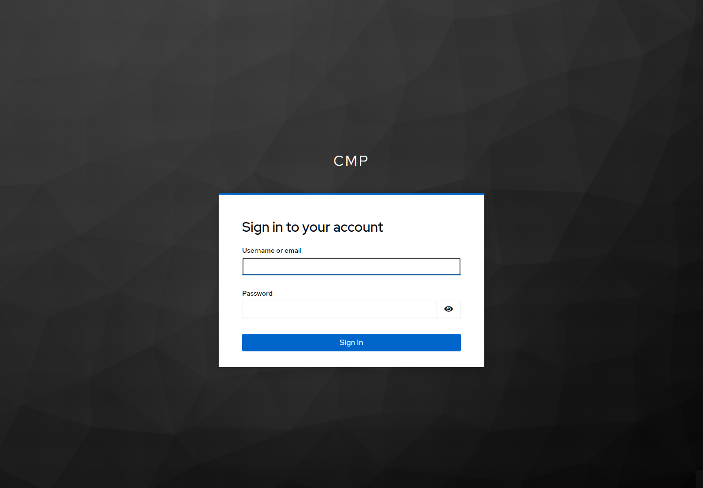

G2 · Configure the realm, the OIDC client and the SAML client
Exactly how the realm and both clients are created through the Keycloak Admin REST API, every SAML setting with its reason, and how to verify the metadata Entra will trust.
▶ Watch this in the video walkthrough: Step 2 · Create the SAML client in Keycloak (starts at 3:15)
Outcome#
Realm cmp-pdf with two clients: the confidential OIDC client cmp-frontend for CMP, and a SAML client whose ID is Contoso's Entra audience. The OIDC client secret is written once to Key Vault. Every setting is read back after it is written.
How the bootstrap configures Keycloak#
The installer on the VM obtains a short-lived admin token over loopback using the temporary bootstrap admin (password read from Key Vault through the VM's managed identity), creates or updates the realm, then upserts each client by clientId. It refuses ambiguous matches, verifies every attribute and the email mapper after writing, and refuses to overwrite a different existing client secret.
def oidc_client(origin):
return {
"clientId": "cmp-frontend", "protocol": "openid-connect", "enabled": True,
"publicClient": False, "bearerOnly": False, "clientAuthenticatorType": "client-secret",
"standardFlowEnabled": True, "implicitFlowEnabled": False,
"directAccessGrantsEnabled": False, "serviceAccountsEnabled": False, "fullScopeAllowed": False,
"redirectUris": [origin + "/auth/callback"], "webOrigins": [origin],
"defaultClientScopes": ["profile", "email"],
"attributes": {"pkce.code.challenge.method": "S256", "post.logout.redirect.uris": origin,
"oauth2.device.authorization.grant.enabled": "false",
"oidc.ciba.grant.enabled": "false"}}
def saml_client(tenant):
return {
"clientId": f"https://login.microsoftonline.com/{tenant}/", "protocol": "saml", "enabled": True,
"redirectUris": ["https://login.microsoftonline.com/login.srf"],
"fullScopeAllowed": False,
"attributes": {
"saml_assertion_consumer_url_post": "https://login.microsoftonline.com/login.srf",
"saml.assertion.signature": "true", "saml.server.signature": "true",
"saml.signature.algorithm": "RSA_SHA256", "saml_name_id_format": "persistent",
"saml_force_name_id_format": "true", "saml.force.post.binding": "true",
"saml.authnstatement": "true", "saml.client.signature": "false",
"saml.server.signature.keyinfo.xmlSigKeyInfoKeyNameTransformer": "CERT_SUBJECT"},
"protocolMappers": [{
"name": "emailaddress", "protocol": "saml", "protocolMapper": "saml-user-property-mapper",
"consentRequired": False, "config": {"user.attribute": "email",
"attribute.name": "http://schemas.xmlsoap.org/ws/2005/05/identity/claims/emailaddress",
"attribute.nameformat": "URI Reference"}}]}
Every SAML setting, and why#
| Keycloak setting (attribute) | Value | Reason / source |
|---|---|---|
| Client ID | https://login.microsoftonline.com/aaaabbbb-0000-cccc-1111-dddd2222eeee/ | Keycloak matches the client by the AuthnRequest Issuer (Keycloak); Entra's Issuer is tenant-specific (Learn) |
| Valid redirect URIs / ACS POST URL | https://login.microsoftonline.com/login.srf | Entra's ACS for workforce tenants (Learn: Table 1) |
| Name ID format + Force name ID format | persistent · On | Entra requires persistent NameID (Learn: Table 2) |
| Force POST binding | On | Response always delivered by POST (Keycloak) |
| Include AuthnStatement | On | Lets the SP bound the session; Keycloak default |
| Sign documents / Sign assertions | On / On | Defence in depth: both the Response and the Assertion are signed |
| Signature algorithm | RSA_SHA256 | SHA-256 based XML signature |
| SAML signature key name | CERT_SUBJECT | KeyInfo carries the certificate subject |
| Client signature required | Off | Entra does not sign authentication requests (Learn) |
| Full scope allowed | Off | No realm roles leak into the assertion |
Mapper emailaddress | User Property email → http://schemas.xmlsoap.org/ws/2005/05/identity/claims/emailaddress (URI Reference) | Required email claim (Learn: Table 2) |


saml_client(). The PoC closes /admin publicly, so there is no console capture.

emailaddress protocol mapper that produces Entra's required email claim.Entra matches the guest on the email the assertion carries. Keycloak users without an email attribute produce no claim, which fails with AADSTS5000819 ("Email address claim is missing…") (Learn). The PoC's local test user deliberately has no email, so it can sign in to CMP but cannot yet be a guest.
Configuration loop#
for client in (oidc_client(config["frontend_origin"]), saml_client(config["tenant_id"])):
clients = request(realm + "/clients?clientId=" + urllib.parse.quote(client["clientId"], safe=""), headers=headers)
if len(clients) > 1:
raise ValueError("Ambiguous realm client")
if not clients:
request(realm + "/clients", "POST", client, headers)
clients = request(realm + "/clients?clientId=" + urllib.parse.quote(client["clientId"], safe=""), headers=headers)
if len(clients) != 1:
raise ValueError("Realm client creation unverified")
client_url = realm + "/clients/" + clients[0]["id"]
client_config = {key: value for key, value in client.items() if key != "protocolMappers"}
request(client_url, "PUT", {**client_config, "id": clients[0]["id"]}, headers)
for mapper in client.get("protocolMappers", []):
path = client_url + "/protocol-mappers/models"
matches = [item for item in request(path, headers=headers) if item["name"] == mapper["name"]]
if len(matches) > 1:
raise ValueError("Ambiguous SAML protocol mapper")
if matches:
request(path + "/" + matches[0]["id"], "PUT", {**mapper, "id": matches[0]["id"]}, headers)
else:
request(path, "POST", mapper, headers)
actual_mappers = request(path, headers=headers)
matches = [item for item in actual_mappers if item["name"] == mapper["name"]]
if (len(matches) != 1 or matches[0].get("protocolMapper") != mapper["protocolMapper"] or
any(matches[0].get("config", {}).get(key) != value for key, value in mapper["config"].items())):
raise ValueError("SAML emailaddress mapper did not persist")
actual = request(client_url, headers=headers)
for key in client_config:
if key == "attributes":
if any(actual.get(key, {}).get(k) != v for k, v in client[key].items()):
raise ValueError("Keycloak client attributes did not persist")
elif actual.get(key) != client[key]:
raise ValueError("Keycloak client configuration did not persist")
if client["protocol"] == "openid-connect":
secret = request(client_url + "/client-secret", headers=headers)["value"]
if not secret or len(secret) < 32:
raise ValueError("Keycloak confidential client secret is invalid")
# Read/write uses only this one secret scope; no operator data-plane access.
current = vault(config["vault_uri"], "keycloak-client-secret")["value"]
if current != secret:
if current != "pending-sso-bootstrap":
raise ValueError("Existing Keycloak client secret differs; explicit rotation required")
vault(config["vault_uri"], "keycloak-client-secret", secret)
print(json.dumps({"status": "ready", "operation": "keycloak"}))
Manual equivalent (Admin CLI)#
If you configure a Keycloak by hand, the same representation can be posted with the Keycloak Admin CLI (Admin CLI chapter). Save the client JSON below as entra-saml-client.json:
{
"clientId": "https://login.microsoftonline.com/aaaabbbb-0000-cccc-1111-dddd2222eeee/",
"protocol": "saml", "enabled": true, "fullScopeAllowed": false,
"redirectUris": ["https://login.microsoftonline.com/login.srf"],
"attributes": {
"saml_assertion_consumer_url_post": "https://login.microsoftonline.com/login.srf",
"saml.assertion.signature": "true", "saml.server.signature": "true",
"saml.signature.algorithm": "RSA_SHA256", "saml_name_id_format": "persistent",
"saml_force_name_id_format": "true", "saml.force.post.binding": "true",
"saml.authnstatement": "true", "saml.client.signature": "false",
"saml.server.signature.keyinfo.xmlSigKeyInfoKeyNameTransformer": "CERT_SUBJECT"
},
"protocolMappers": [{
"name": "emailaddress", "protocol": "saml", "protocolMapper": "saml-user-property-mapper",
"config": { "user.attribute": "email",
"attribute.name": "http://schemas.xmlsoap.org/ws/2005/05/identity/claims/emailaddress",
"attribute.nameformat": "URI Reference" }
}]
}
kcadm.sh config credentials --server https://sso.contoso.com --realm master --user <admin>
kcadm.sh create clients -r cmp-pdf -f entra-saml-client.json
kcadm.sh get clients -r cmp-pdf -q clientId=https://login.microsoftonline.com/aaaabbbb-0000-cccc-1111-dddd2222eeee/ --fields clientId,attributes
Verify the published metadata#




Full script: bootstrap/sso-keycloak.py
#!/usr/bin/env python3
"""Dedicated VM Keycloak + Caddy; only public realm routes reach the loopback server."""
import hashlib
import json
import os
from pathlib import Path
import re
import subprocess
import sys
import time
import urllib.error
import urllib.parse
import urllib.request
IMAGE = "quay.io/keycloak/keycloak:26.8.1@sha256:79c623a22abacf3fe6c00a5fb30f5b7843d717b234033b80995891c06116d244"
ROOT = Path("/var/lib/cmp-sso")
CONFIG = Path("/etc/cmp-sso-keycloak.json")
LOOPBACK = "http://127.0.0.1:8080"
class HttpFailure(RuntimeError):
def __init__(self, status):
self.status = status
super().__init__("Required SSO HTTPS/loopback operation failed")
class NoRedirect(urllib.request.HTTPRedirectHandler):
def redirect_request(self, req, fp, code, msg, headers, newurl):
return None
def request(url, method="GET", body=None, headers=None, form=False):
if not (url.startswith("https://") or url.startswith(LOOPBACK + "/") or
url.startswith("http://169.254.169.254/metadata/identity/")):
raise ValueError("Only validated TLS or trusted loopback/IMDS connections are permitted")
data = None
headers = dict(headers or {})
if body is not None:
data = (urllib.parse.urlencode(body) if form else json.dumps(body)).encode()
headers["Content-Type"] = "application/x-www-form-urlencoded" if form else "application/json"
opener = urllib.request.build_opener(urllib.request.ProxyHandler({}), NoRedirect())
try:
with opener.open(urllib.request.Request(url, data=data, method=method, headers=headers), timeout=40) as response:
raw = response.read()
return json.loads(raw) if raw else None
except urllib.error.HTTPError as error:
raise HttpFailure(error.code) from None
except Exception:
raise HttpFailure(0) from None
def vault(vault_uri, name, value=None):
if name not in ("keycloak-db-password", "keycloak-admin-password", "postgres-ca", "keycloak-client-secret"):
raise ValueError("Unapproved SSO secret")
token = request("http://169.254.169.254/metadata/identity/oauth2/token"
"?api-version=2018-02-01&resource=https%3A%2F%2Fvault.azure.net",
headers={"Metadata": "true"})["access_token"]
return request(f"{vault_uri}secrets/{name}?api-version=7.4", "GET" if value is None else "PUT",
None if value is None else {"value": value, "tags": {"costcontrol": "ignore"}},
headers={"Authorization": f"Bearer {token}"})
def get_secret(vault_uri, name, attempts=90):
for attempt in range(attempts):
try:
value = vault(vault_uri, name)["value"]
if value and value != "pending-sso-bootstrap":
return value
except (HttpFailure, KeyError):
pass
if attempt + 1 < attempts:
time.sleep(10)
raise RuntimeError("SSO secret unavailable; check scoped VM identity permissions and database bootstrap")
def run(*args):
result = subprocess.run(args, capture_output=True, text=True, check=False)
if result.returncode:
raise RuntimeError("SSO required guest operation failed; sensitive diagnostics suppressed")
return result.stdout.strip()
def validate_config(config):
if (not re.fullmatch(r"https://[a-z0-9-]+\.indonesiacentral\.cloudapp\.azure\.com", config.get("origin", "")) or
not re.fullmatch(r"https://cmpsso-frontend\.[a-z0-9-]+\.indonesiacentral\.azurecontainerapps\.io",
config.get("frontend_origin", "")) or
config.get("tenant_id") != "aaaabbbb-0000-cccc-1111-dddd2222eeee" or
config.get("host") != "postgres.cmpsso.internal" or
not re.fullmatch(r"https://[a-z0-9-]+\.vault\.azure\.net/", config.get("vault_uri", ""))):
raise ValueError("Unexpected isolated SSO configuration")
def oidc_client(origin):
return {
"clientId": "cmp-frontend", "protocol": "openid-connect", "enabled": True,
"publicClient": False, "bearerOnly": False, "clientAuthenticatorType": "client-secret",
"standardFlowEnabled": True, "implicitFlowEnabled": False,
"directAccessGrantsEnabled": False, "serviceAccountsEnabled": False, "fullScopeAllowed": False,
"redirectUris": [origin + "/auth/callback"], "webOrigins": [origin],
"defaultClientScopes": ["profile", "email"],
"attributes": {"pkce.code.challenge.method": "S256", "post.logout.redirect.uris": origin,
"oauth2.device.authorization.grant.enabled": "false",
"oidc.ciba.grant.enabled": "false"}}
def saml_client(tenant):
return {
"clientId": f"https://login.microsoftonline.com/{tenant}/", "protocol": "saml", "enabled": True,
"redirectUris": ["https://login.microsoftonline.com/login.srf"],
"fullScopeAllowed": False,
"attributes": {
"saml_assertion_consumer_url_post": "https://login.microsoftonline.com/login.srf",
"saml.assertion.signature": "true", "saml.server.signature": "true",
"saml.signature.algorithm": "RSA_SHA256", "saml_name_id_format": "persistent",
"saml_force_name_id_format": "true", "saml.force.post.binding": "true",
"saml.authnstatement": "true", "saml.client.signature": "false",
"saml.server.signature.keyinfo.xmlSigKeyInfoKeyNameTransformer": "CERT_SUBJECT"},
"protocolMappers": [{
"name": "emailaddress", "protocol": "saml", "protocolMapper": "saml-user-property-mapper",
"consentRequired": False, "config": {"user.attribute": "email",
"attribute.name": "http://schemas.xmlsoap.org/ws/2005/05/identity/claims/emailaddress",
"attribute.nameformat": "URI Reference"}}]}
def caddy_config(origin):
host = urllib.parse.urlsplit(origin).hostname
return f"""{{
admin off
}}
http://{host} {{
redir https://{host}{{uri}} permanent
}}
{host} {{
@public path /realms/cmp-pdf /realms/cmp-pdf/* /resources/*
handle @public {{
reverse_proxy 127.0.0.1:8080
}}
handle {{
respond 404
}}
header Strict-Transport-Security "max-age=31536000"
}}
"""
def configure(config):
admin = get_secret(config["vault_uri"], "keycloak-admin-password")
token = None
for attempt in range(90):
try:
token = request(LOOPBACK + "/realms/master/protocol/openid-connect/token", "POST",
{"grant_type": "password", "client_id": "admin-cli", "username": "cmpbootstrap",
"password": admin}, form=True)["access_token"]
break
except HttpFailure:
if attempt == 89:
raise RuntimeError("Keycloak loopback readiness/admin authentication failed") from None
time.sleep(10)
headers = {"Authorization": f"Bearer {token}"}
realm = LOOPBACK + "/admin/realms/cmp-pdf"
representation = {"realm": "cmp-pdf", "enabled": True, "sslRequired": "external",
"registrationAllowed": False, "resetPasswordAllowed": False,
"rememberMe": False, "verifyEmail": True,
"loginWithEmailAllowed": True, "duplicateEmailsAllowed": False,
"bruteForceProtected": True}
try:
request(realm, headers=headers)
request(realm, "PUT", representation, headers)
except HttpFailure as error:
if error.status != 404:
raise
request(LOOPBACK + "/admin/realms", "POST", representation, headers)
for client in (oidc_client(config["frontend_origin"]), saml_client(config["tenant_id"])):
clients = request(realm + "/clients?clientId=" + urllib.parse.quote(client["clientId"], safe=""), headers=headers)
if len(clients) > 1:
raise ValueError("Ambiguous realm client")
if not clients:
request(realm + "/clients", "POST", client, headers)
clients = request(realm + "/clients?clientId=" + urllib.parse.quote(client["clientId"], safe=""), headers=headers)
if len(clients) != 1:
raise ValueError("Realm client creation unverified")
client_url = realm + "/clients/" + clients[0]["id"]
client_config = {key: value for key, value in client.items() if key != "protocolMappers"}
request(client_url, "PUT", {**client_config, "id": clients[0]["id"]}, headers)
for mapper in client.get("protocolMappers", []):
path = client_url + "/protocol-mappers/models"
matches = [item for item in request(path, headers=headers) if item["name"] == mapper["name"]]
if len(matches) > 1:
raise ValueError("Ambiguous SAML protocol mapper")
if matches:
request(path + "/" + matches[0]["id"], "PUT", {**mapper, "id": matches[0]["id"]}, headers)
else:
request(path, "POST", mapper, headers)
actual_mappers = request(path, headers=headers)
matches = [item for item in actual_mappers if item["name"] == mapper["name"]]
if (len(matches) != 1 or matches[0].get("protocolMapper") != mapper["protocolMapper"] or
any(matches[0].get("config", {}).get(key) != value for key, value in mapper["config"].items())):
raise ValueError("SAML emailaddress mapper did not persist")
actual = request(client_url, headers=headers)
for key in client_config:
if key == "attributes":
if any(actual.get(key, {}).get(k) != v for k, v in client[key].items()):
raise ValueError("Keycloak client attributes did not persist")
elif actual.get(key) != client[key]:
raise ValueError("Keycloak client configuration did not persist")
if client["protocol"] == "openid-connect":
secret = request(client_url + "/client-secret", headers=headers)["value"]
if not secret or len(secret) < 32:
raise ValueError("Keycloak confidential client secret is invalid")
# Read/write uses only this one secret scope; no operator data-plane access.
current = vault(config["vault_uri"], "keycloak-client-secret")["value"]
if current != secret:
if current != "pending-sso-bootstrap":
raise ValueError("Existing Keycloak client secret differs; explicit rotation required")
vault(config["vault_uri"], "keycloak-client-secret", secret)
print(json.dumps({"status": "ready", "operation": "keycloak"}))
def serve(config):
runtime = Path("/run/cmp-sso")
runtime.mkdir(mode=0o700, exist_ok=True)
ca = get_secret(config["vault_uri"], "postgres-ca")
(runtime / "ca.crt").write_text(ca)
os.chmod(runtime / "ca.crt", 0o644)
values = {
"KC_DB": "postgres", "KC_DB_USERNAME": "keycloak_app",
"KC_DB_URL": f"jdbc:postgresql://{config['host']}:5432/keycloak?sslmode=verify-full&sslrootcert=/mnt/postgres-tls/ca.crt",
"KC_DB_PASSWORD": get_secret(config["vault_uri"], "keycloak-db-password"),
"KC_BOOTSTRAP_ADMIN_USERNAME": "cmpbootstrap",
"KC_BOOTSTRAP_ADMIN_PASSWORD": get_secret(config["vault_uri"], "keycloak-admin-password"),
"KC_HTTP_ENABLED": "true", "KC_HTTP_HOST": "127.0.0.1", "KC_HOSTNAME": config["origin"],
"KC_HOSTNAME_STRICT": "true", "KC_PROXY_HEADERS": "xforwarded",
"KC_PROXY_TRUSTED_ADDRESSES": "127.0.0.1/32", "KC_HTTP_MANAGEMENT_HOST": "127.0.0.1",
"KC_HEALTH_ENABLED": "true", "KC_METRICS_ENABLED": "false",
"JAVA_OPTS_KC_HEAP": "-Xms512m -Xmx1536m"}
if any("\n" in value or "\r" in value for value in values.values()):
raise ValueError("Invalid environment material")
env = runtime / "keycloak.env"
env.write_text("".join(f"{key}={value}\n" for key, value in values.items()))
os.chmod(env, 0o600)
subprocess.run(["docker", "rm", "-f", "cmp-sso-keycloak"], capture_output=True, check=False)
os.execvp("docker", ["docker", "run", "--rm", "--name", "cmp-sso-keycloak", "--network", "host",
"--log-driver", "none", "--env-file", str(env),
"--mount", f"type=bind,src={runtime}/ca.crt,dst=/mnt/postgres-tls/ca.crt,readonly",
IMAGE, "start"])
def install(config):
if 'VERSION_ID="24.04"' not in Path("/etc/os-release").read_text():
raise ValueError("Ubuntu 24.04 is required")
ROOT.mkdir(mode=0o700, parents=True, exist_ok=True)
fingerprint = {**config, "sha256": hashlib.sha256(Path(__file__).read_bytes()).hexdigest()}
marker = ROOT / "configuration.json"
if marker.exists() and json.loads(marker.read_text()) != fingerprint:
raise ValueError("Existing VM contract changed; explicit recovery/upgrade required")
if not marker.exists():
marker.write_text(json.dumps(fingerprint, sort_keys=True))
os.environ["DEBIAN_FRONTEND"] = "noninteractive"
run("apt-get", "update", "-q")
run("apt-get", "install", "-y", "-q", "docker.io", "caddy")
run("systemctl", "enable", "--now", "docker")
run("docker", "pull", IMAGE)
Path("/etc/caddy/Caddyfile").write_text(caddy_config(config["origin"]))
run("caddy", "validate", "--config", "/etc/caddy/Caddyfile", "--adapter", "caddyfile")
Path("/etc/systemd/system/cmp-sso-keycloak.service").write_text(
"[Unit]\nDescription=Isolated SSO Keycloak (production)\n"
"After=network-online.target docker.service\nWants=network-online.target\nRequires=docker.service\n"
"[Service]\nType=simple\nExecStart=/usr/bin/python3 -B /opt/cmp/sso-keycloak.py serve\n"
"ExecStop=-/usr/bin/docker stop cmp-sso-keycloak\nRestart=always\nRestartSec=15\n"
"TimeoutStartSec=1800\nTimeoutStopSec=120\nUMask=0077\nStandardOutput=null\nStandardError=null\n"
"[Install]\nWantedBy=multi-user.target\n")
run("systemctl", "daemon-reload")
run("systemctl", "enable", "--now", "cmp-sso-keycloak")
run("systemctl", "enable", "caddy")
run("systemctl", "restart", "caddy")
configure(config)
if __name__ == "__main__":
try:
os.umask(0o077)
if os.geteuid() != 0:
raise ValueError("Root required")
config = json.loads(CONFIG.read_text())
validate_config(config)
action = sys.argv[1] if len(sys.argv) == 2 else "install"
if action == "serve":
serve(config)
elif action == "configure":
configure(config)
elif action == "install":
install(config)
else:
raise ValueError("Unknown operation")
except Exception:
print("SSO Keycloak bootstrap failed: check scoped vault access, DB TLS, Docker and Caddy; details suppressed.",
file=sys.stderr)
sys.exit(1)